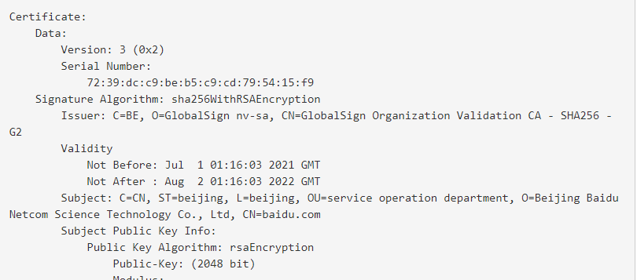
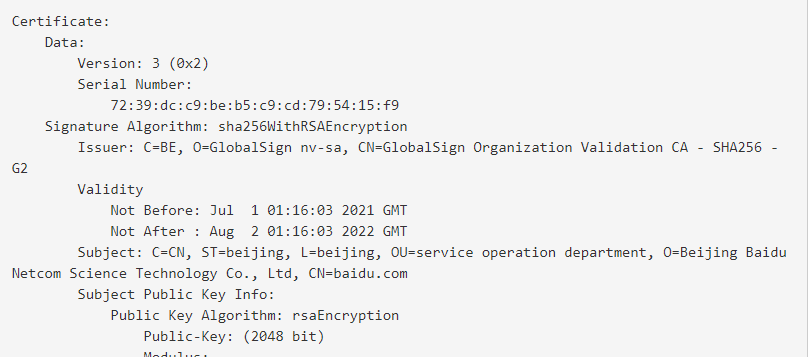

OpenSSL.crypto库相关操作
读写数字证书（x509证书）
1 | # 读取数字证书 |
1 | # 写数字证书 |
读写扩展字段
1 | # 读扩展字段 |
1 | # 写入扩展字段 |
读写subject和issuer
subject：公钥拥有者的身份识别信息
issuer：本证书内容的发行实体
下图为百度的证书：

1 | # 获取subject和issuer |
1 | # 设置subject |
读写公钥
1 | # 读取数字证书的公钥 |
1 | # 写入公钥 |
签名
1 | # 生成CA证书以及私钥 |
1 | # 读取数字证书 |
1 | # 写数字证书 |
1 | # 读扩展字段 |
1 | # 写入扩展字段 |
subject：公钥拥有者的身份识别信息
issuer：本证书内容的发行实体
下图为百度的证书：

1 | # 获取subject和issuer |
1 | # 设置subject |
1 | # 读取数字证书的公钥 |
1 | # 写入公钥 |
1 | # 生成CA证书以及私钥 |